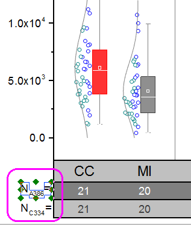

Gruppiertes Boxdiagramm mit farbkodierten Datenpunkten
GroupedBoxChart
Zusammenfassung
Origin kann verwendet werden, um gruppierte Boxdiagramme aus Rohdaten mit Datenpunkten und Verteilungskurven zu erstellen.

Origin-Version mind. erforderlich: 2015 SR0
Was Sie lernen werden
Dieses Tutorial zeigt Ihnen, wie Sie:
- ein gruppiertes Boxdiagramm aus Rohdaten erstellen,
- eine Datenzeichnung mit indizierter Symbolfarbe hinzufügen,
- eine Verteilungskurve hinzufügen und benutzerdefiniert anpassen,
- die Achsen der Tabelle benutzerdefiniert anpassen.
Schritte
Boxdiagramm aus Rohdaten erstellen
Dieses Tutorial basiert auf dem Projekt: <Origin-Verzeichnis>\Samples\Tutorial Data.opj.
- Öffnen Sie Tutorial Data.opj und navigieren Sie zu dem Ordner Grouped Box with Index Color DataPoint.
- Aktivieren Sie die Arbeitsmappe Book 5.
- Markieren Sie die Spalten col(E) bis col(J):
- Klicken Sie auf der Symbolleiste 2D-Grafiken auf das kleine Dreieck unterhalb der sechsten Schaltfläche, um das Ausklappmenü aufzurufen. Wählen Sie Gruppierte Boxdiagramme, Roh:

- Setzen Sie im Dialog Plotting: plotgboxraw die Gruppenanzahl auf 2, die 1. Gruppenzeile auf Kommentare und die 2. Gruppenzeile auf Langname. Ein Boxdiagramm wird erstellt, dessen Spaltendaten in drei Gruppen von jeweils zwei angeordnet sind und deren Zeilennamen der X-Achse aus den Kommentaren und Langnamen des Arbeitsblatts stammen:
- Klicken Sie auf OK. Das gruppierte Boxdiagramm aus Rohdaten wird mit zwei Gruppierungsstufen erstellt:
- Um Datenpunkte zu dem Diagramm hinzuzufügen, klicken Sie doppelt auf die Zeichnung, um den Dialog Details zu öffnen. Erweitern Sie den Zweig Layer1 im linken Bedienfeld und wählen Sie die erste Zeichnung darunter.
- Setzen Sie auf der Registerkarte Boxdiagramm den Typ auf Box[Rechts] + Daten [Links]. Klicken Sie auf die Schaltfläche Übernehmen. Zwei neue Registerkarten werden zu dem Dialog hinzugefügt: Daten und Symbole.
- Um eine Verteilungskurve hinzuzufügen, setzen Sie auf der Registerkarte Daten den Typ der Verteilungskurve auf Normal. Setzen Sie die Klassenausrichtung auf Rechts, um die Kurve auszurichten.
- Klicken Sie auf OK. Die Datenpunkte und Verteilungskurven werden im Diagramm angezeigt:
Boxen und statistische Markierungen benutzerdefiniert anpassen
- Klicken Sie auf eine der Boxen, um den Dialog Details Zeichnung erneut zu öffnen.
- Setzen Sie auf der Registerkarte Gruppe sowohl die Randfarbe als auch die Boxfarbe auf das Inkrement Durch Eins, so dass jede Box in der Untergruppe eine andere Farbe hat.
- Klicken Sie auf die Schaltfläche im Abschnitt Details der Farbe Rand. Klicken Sie in dem aufgerufenen Dialog Editor für Inkrement auf die erste Farbe und ändern Sie sie in Rot. Legen Sie die zweite Farbe auf Grau fest. Klicken Sie auf OK.
- Klicken Sie auf die Schaltfläche im Abschnitt Details der Farbe Box, um den Dialog Inkrementeditor zu öffnen. Klicken Sie auf die 1. Farbe und dann auf die Schaltfläche Benutzerdefinierte Farben festlegen.
: - Setzen Sie die Werte von RGB in den Feldern Rot, Grün, Blau unten rechts auf 255, 51 bzw. 51 und klicken Sie auf OK, um den Dialog zu schließen.
- Tun Sie dasselbe für die 2. Farbe. Setzen Sie die RGB-Werte auf 143, 143 und 143 und klicken Sie auf OK, um den Dialog zu schließen. Klicken Sie dann auf OK, um den Editor für Inkrement zu schließen und die Einstellungen anzuwenden.
- Der nächste Schritt besteht darin, die Markierungen der Deskriptiven Statistik, die in der Zeichnung gezeigt werden, benutzerdefiniert anzupassen, zum Beispiel die Markierungen für 99%, 1%, Max und Min.
Setzen Sie auf der Registerkarte Prozentangaben die Rahmenfarbe auf Weiß und klicken Sie auf die Schaltfläche Übernehmen. Da der Hintergrund des Diagramms auch weiß ist, sind Max, Min, 99% und 1% vor ihm nicht im Diagramm sichtbar.
 | Anwender können auf der Registerkarte Prozentangaben auch eine Markierung ausblenden, indem Sie den Typ auf Kein (die letzte Form) in der Auswahlliste festlegen. |
- Setzen Sie auf der Registerkarte Linien die Farbe für die Whisker und die Farbe der Whiskerenden auf Grau und die Medianlinie auf Weiß.
Klicken Sie auf OK. Die Zeichnung sollte folgendermaßen aussehen.

Datensymbole und Verteilungskurven benutzerdefiniert anpassen
- Klicken Sie zum Öffnen des Dialogs Details Zeichnung doppelt auf eine der Boxen.
- Wechseln Sie zur Registerkarte Symbole. Setzen Sie die Größe auf 5, die Form auf 2 Kreis und Innen auf Offen.
- Klicken Sie auf die Auswahlliste Randfarbe und wählen Sie Index: Col(B):Machines. Die Randfarben des Symbols werden gemäß Spalte B indiziert. Alle Symbole mit dem Machine-Wert A386 sind von einer Farbe und diejenigen mit C334 haben eine andere Farbe:
- Wenn die Symbolfarbe indiziert ist, wird die Registerkarte Farbliste im Dialog angezeigt. Um eine benutzerdefinierte Inkrementliste festzulegen, gehen Sie zur Registerkarte Farbliste. Aktivieren Sie das Kontrollkästchen Benutzerdefinierte Inkrementliste verwenden und setzen Sie die ersten zwei Farbwerte auf Blau und Cyan Dunkel.
- Um die Farbe der Verteilungskurve benutzerdefiniert anzupassen, setzen Sie auf der Registerkarte Linien die Farbe der Verteilungskurve auf Grau.
- Klicken Sie auf OK, um den Dialog zu schließen.
Achsen benutzerdefiniert anpassen
Für gruppierte Zeichnungen werden mehrzeilige Tabellen der Hilfsstrichsbeschriftungen unterstützt. Die entsprechenden Achsensymbole auf der Registerkarte Beschriftung der Hilfsstriche im Dialog Achsen beginnen bei der letzten Tabellenzeile, z.B. Unten 1, Unten 2, ..., Unten N. Das bedeutet, dass die erste Zeile von unten Unten1 entspricht und so weiter.
- Um die Zeile der Hilfsstrichsbeschriftung mit SEG 1, SEG 2 und SEG 3 zur oberen X-Achse zu verschieben, klicken Sie doppelt auf diese Hilfsstrichsbeschriftungszeile.
- Der Dialog Achsen wird bei aktiviertem Achsensymbol Unten1 geöffnet. Klicken Sie mit der rechten Maustaste auf Unten1 im linken Bedienfeld und wählen Sie Auf die gegenüberliegende Seite verschieben.
-
- Klicken Sie auf die Schaltfläche Anwenden. Die Zeile der Hilfsstrichsbeschriftung SEG 1, SEG 2 und SEG 3 wird nun bei der oberen X-Achse im Diagramm angezeigt und als Achsensymbol Oben 1 im linken Bedienfeld des Dialogs umbenannt.
- Das vorherige Symbol Unten 2 verwandelt sich in Unten 1. Wählen Sie Unten 1. Gehen Sie zur Registerkarte Tabelle. Setzen Sie die Anzahl der Zeilen auf 3. Klicken Sie auf die Schaltfläche Anwenden. Drei identische Tabellen für die unteren Hilfsstrichsbeschriftungen werden auf dem Diagramm angezeigt: Unten 1, Unten 2 und Unten 3.
- Um die erste untere Hilfsstrichsbeschriftungszeile mit Hellgrau zu füllen, wählen Sie das Symbol Unten 3 im linken Bedienfeld, stellen Sie sicher, dass Sie sich noch auf der Registerkarte Tabelle befinden, und deaktivieren Sie das Kontrollkästchen Auto, um die separate Steuerung des Tabellenlayouts der Hilfsstrichsbeschriftungen zu aktivieren. Wählen Sie für Füllfarbe die Option Hellgrau und deaktivieren Sie das Kontrollkästchen Rahmen Innen im Zweig Tabellenlayout.
- Die zweite Zeile leitet die Beschriftungen aus der Spalte col(C) des zweiten Arbeitsblatts A386_CC.MI ab. Wählen Sie das Symbol Unten 2 und gehen Sie zur Registerkarte Anzeige, setzen Sie den Typ auf die Option Text aus Datensatz und den Datensatzname in der Auswahlliste auf [Book5]"A386_CC.MI"!C"N".
- Wechseln Sie zur Registerkarte Format und deaktivieren Sie das Kontrollkästchen Auto. Ändern Sie die Farbe in Weiß. Gehen Sie dann zur Registerkarte Tabelle und legen Sie Folgendes fest:
-
- Wählen Sie das Symbol Unten 1, gehen Sie zur Registerkarte Anzeige, setzen Sie den Typ auf Text aus Datensatz und den Datensatzname auf [Book5]"C334_CC.MI"!C"N", da er die Spalte col(C) aus dem dritten Arbeitsblatt C334_CC.MI verwendet.
- Wechseln Sie zur Registerkarte Tabelle und legen Sie das Tabellenlayout wie unten fest:
- Wählen Sie das Symbol Oben 1, gehen Sie zur Registerkarte Tabelle und legen Sie das Tabellenlayout für die obere Achse, wie unten zu sehen, fest:
- Gehen Sie dann zur Registerkarte Format setzen Sie die Schriftgröße auf 22 und die Hilfsstrichsbeschriftung auf Fett:
- Wählen Sie für die Y-Achse die folgenden Einstellungen:
- Registerkarte Skalierung (Symbol Vertical): Setzen Sie das Inkrement auf 5000.
- Registerkarte Beschriftung der Hilfsstriche >> Registerkarte Anzeige (Symbol Links): Setzen Sie Anzeige auf Wissenschaftlich 10^3.
- Klicken Sie auf OK, um den Dialog zu schließen.
- Wählen Sie den Y-Achsentitel Bereich und drücken Sie die Taste Entfernen, um ihn zu entfernen.
Legende aktualisieren und Textobjekte hinzufügen
- Klicken Sie mit der rechten Maustaste auf die Legende des Boxdiagramms und wählen Sie Legende: Boxdiagrammkomponenten, um den Dialog Graph Manipulation: legendbox zu öffnen. Deaktivieren Sie alle Komponenten außer Data:
- Klicken Sie auf OK. Die Legende zeigt nur die Datensymbole. Klicken Sie dann doppelt auf den Legendentext, um den direkten Bearbeitungsmodus aufzurufen. Löschen Sie die erste Zeile der Legende. Markieren und ziehen Sie das Legendenobjekt an die gewünschte Stelle.
- Um die schwarze Linie um die Legende herum zu entfernen, klicken Sie mit der rechten Maustaste auf das Legendenobjekt und wählen Sie Einstellungen. Setzen Sie im Dialog Objekteigenschaften den Hintergrund auf Kein.
- Origin unterstützt noch keine Titel für die Tabellen der Hilfsstrichsbeschriftungen. Anwender können jedoch manuell Textobjekte hinzufügen. Klicken Sie mit der rechten Maustaste auf den weißen Bereich links von der zweiten unteren Hilfsstrichsbeschriftungszeile und wählen Sie Text hinzufügen im Kontextmenü, das angezeigt wird. Geben Sie NA386= ein. Markieren Sie dann noch immer im Modus der direkten Bearbeitung A386 und klicken Sie auf die Schaltfläche auf der Symbolleiste Format, um es in tiefgestellte Zeichen umzuwandeln. Markieren und ziehen Sie an dem Text, bis er nach Ihren Wünschen positioniert ist.
- Fügen Sie ein weiteres Textobjekt NC334= links von der dritten Hilfsstrichsbeschriftungszeile hinzu und verwandeln Sie C334 in tiefgestellte Zeichen.
- 
Das Diagramm sollte am Ende folgendermaßen aussehen: